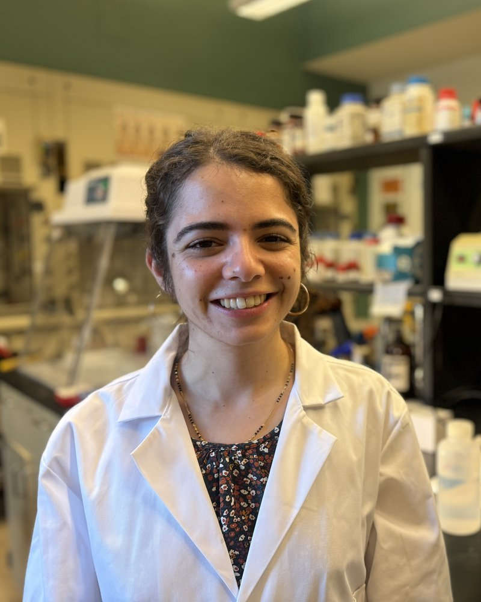
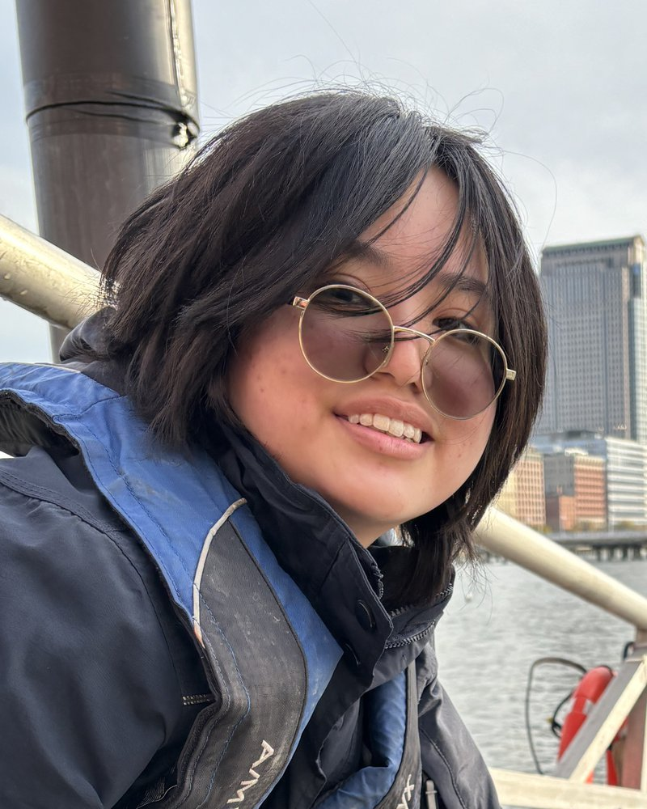
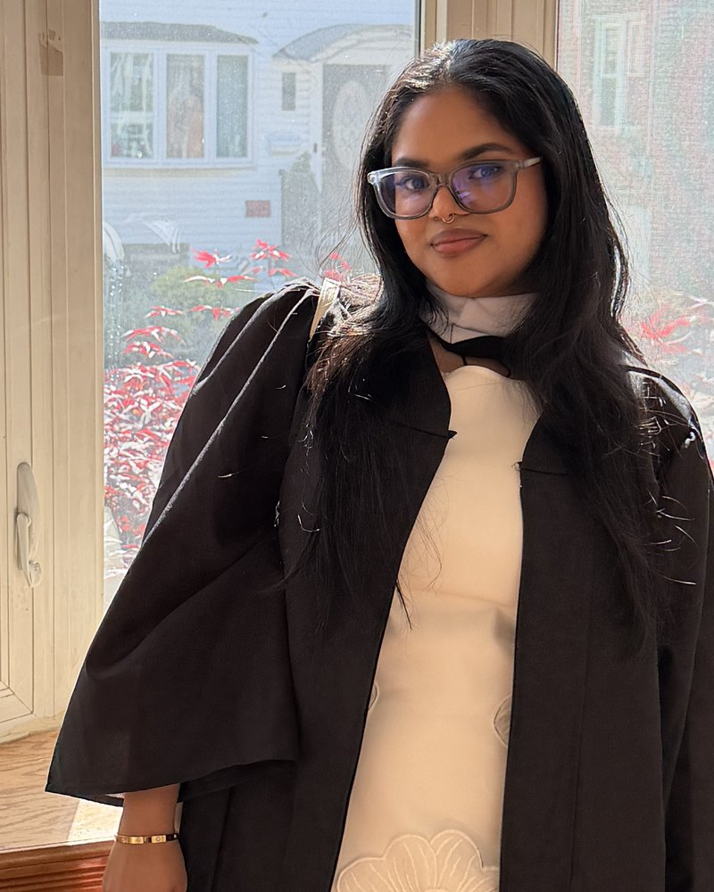
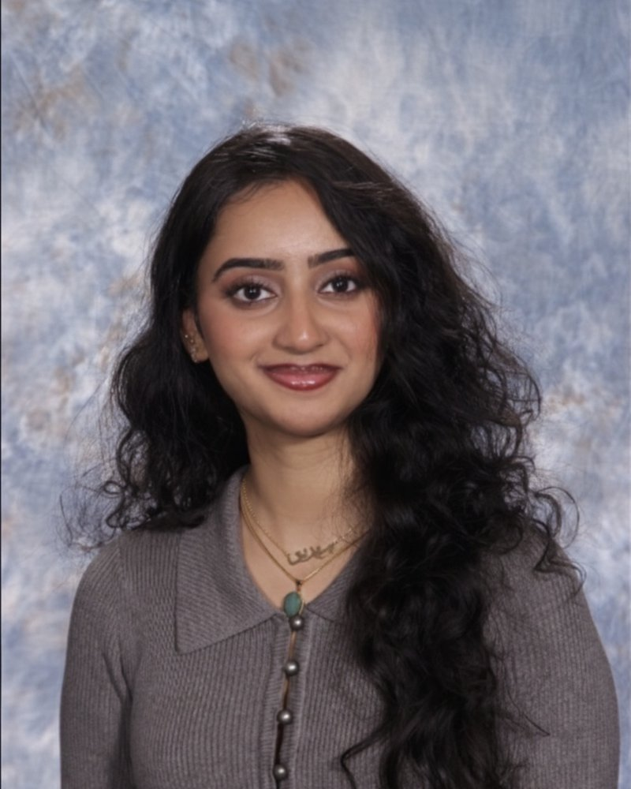
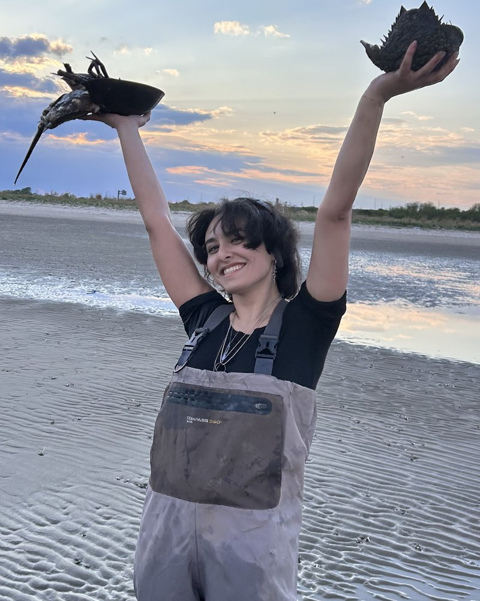
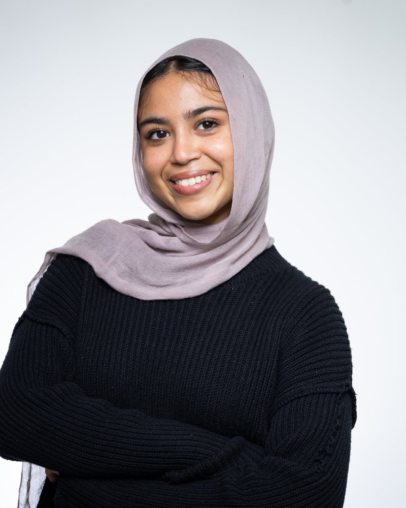
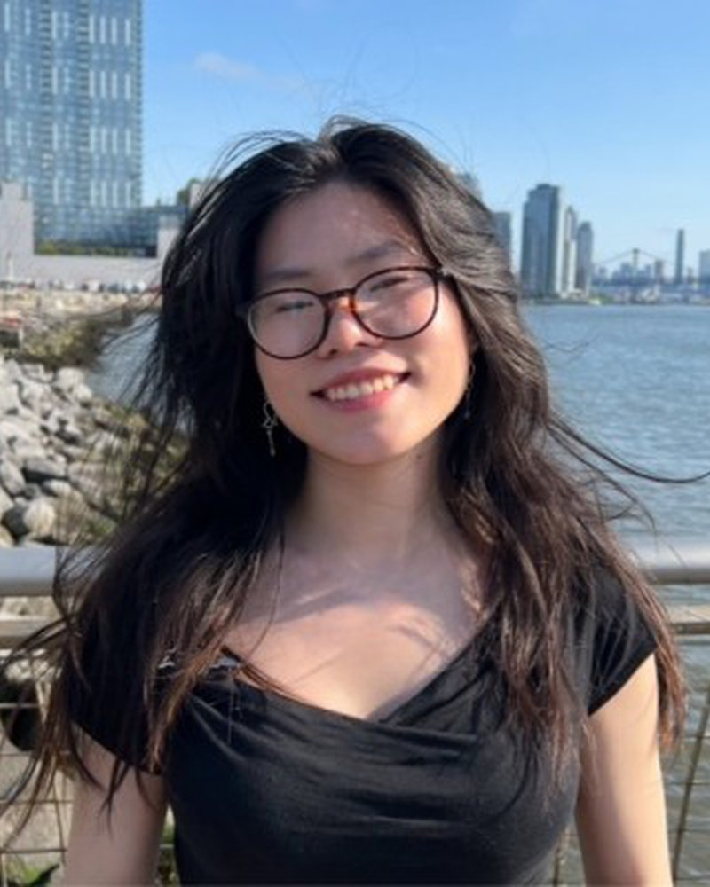
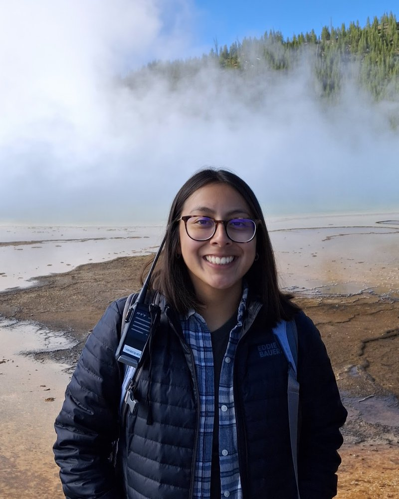

Ana Gonzalez-Nayeck (she/her)
Assistant Professor of Environmental Science, Baruch College (CUNY)

Assistant Professor of Environmental Science, Baruch College (CUNY)
The Baruch Microbial Biogeochemistry Lab (BMBL) provides research experiences to undergraduate students. I place special emphasis on student outcomes, and on mentoring students directly through applications to post-graduate programs. More lab members will be added soon.

CUNY Climate Scholar and Honors Thesis Student, 2025–2026 · Lehman College
How nutrient limitation affects carbon storage and sinking in the ocean microbe Prochlorococcus
Vivian explored how low-nutrient conditions of the Sargasso Sea influenced Prochlorococcus sinking rate, biofilm aggregation, and how it could inform Prochlorococcus-facilitated particulate organic carbon export. This project began as part of the 2025–26 CUNY Climate Scholars, and continued as their senior honors thesis. Vivian graduated with a B.S. in Interdisciplinary Environmental Science at Lehman College in 2026. Her research interests involve microbial ecology related to the oceanic carbon cycle.
Now: C-CoMP Bridge-to-PhD Postbaccalaureate Fellow, Stony Brook University

Independent Study Student (Spring 2024) and Honors Thesis Student (2025–2026)
How microbial mats affect the growth and recruitment of oyster spat in the Hudson River
June worked on how the presence of biofilms affects oyster growth in the Hudson River for her honors thesis and presented her work at Rowan University! June loves to blast music with her speaker while conducting experiments.
Now: Conducting research through the RAMP program at City College

Independent Study Student and Research Assistant, 2025–2026
Proxies for ancient CO2
Mehreen worked with Prochlorococcus to explore how cyanobacteria respond to changes in nutrient availability. She finds it fascinating how something as small as a microbe can respond to its environment and play a role in the marine carbon cycle.

Collaborator, Fall 2025
How seeded oysters and microbial mats affect nitrogen fluxes in the Hudson River
A. helped run a continuous-flow core incubation experiment studying how the presence of seeded oysters and microbial mats impacts nitrogen fluxes in the Hudson River. They are largely interested in biogeochemistry and coastal resiliency, with an overwhelming love for salt marshes for both their beauty and the ecosystem services they provide to all living beings.
Now: Lab Manager, Benthic Ecology Lab, Baruch College (CUNY)

Susan Locke Interdisciplinary Course Student (Spring 2025) and Independent Study Student (Fall 2025)
How nutrient limitation affects aggregation and EPS production in the ocean microbe Prochlorococcus
Mariam Moazzam conducted independent research in the Gonzalez-Nayeck Lab, studying ocean carbon export and how nutrient limitation influences Prochlorococcus aggregation and extracellular polymeric substance (EPS) production in the Sargasso Sea, with implications for carbon sequestration. During the Susan Locke Interdisciplinary course, she also visited Columbia University’s Lamont-Doherty Earth Observatory, where she explored tree cores and dendrochronology research. Since then, Mariam has worked with Residual Carbon, a carbon project developer, and on data engineering and carbon modeling projects at Tufts University and in Costa Rica focused on agroforestry and reforestation. She is now pursuing a master’s degree in Technology Management at Columbia University and hopes to continue working at the intersection of sustainability, data, and technology.
Now: M.S. Student in Technology Management, Columbia University; Data Engineer and Carbon Researcher, Tufts University

Summer Intern (Lamont-Doherty Earth Observatory) and Independent Study Student, 2025
Tree-ring clues to where the timber in a Harlem building came from (in collaboration with Drs. Mukund Palat Rao and Caroline Leland, LDEO Tree Ring Lab)
Xiao studied the tree rings of salvaged wooden joists from a demolished building in Harlem to determine the age and provenance of the timbers for her summer internship at LDEO. Outside of research, Xiao enjoys photography and hanging out with cats!
Now: Taking a gap year before pursuing a master’s degree
Independent Study Student (Spring 2024) and Honors Thesis Student (2024–2025)
Sugar-related uncertainties in a proxy for ancient CO2
For his honors thesis, Liam researched if there is a carbon isotope fractionation associated with sugar excreted by cyanobacteria, thereby potentially impacting a proxy for ancient atmospheric CO2. After graduating from Baruch, he continued his work at LDEO, this time researching how climate-driven shifts in phytoplankton carbon fixation may alter the strength of the biological pump and the ocean’s overall capacity to buffer future anthropogenic climate changes. He is interested in environmental and climate law & policy, specifically within built and urban environments!
Now: J.D. Candidate, UC Berkeley School of Law

Visiting Undergraduate Researcher, Harvard University E3 REU, Summer 2020
Diversity of carbon fixation pathways in microbial mats
As a visiting undergraduate researcher, Diana studied the diversity of carbon fixation pathways in microbial mats. She is now wrapping up her PhD in Earth and Environmental Sciences at the University of Michigan where she studies organic matter preservation in low-oxygen freshwater environments, with a focus on carbon and nitrogen cycling. Diana is currently a Williams College Gaius Charles Bolin Fellow in Geosciences where she will continue to teach and conduct research upon the completion of her PhD. Fun fact: Ana connected Diana to her PhD advisor and encouraged her to apply for the Bolin!
Now: PhD Student, University of Michigan & Geosciences Bolin Fellow, Williams College